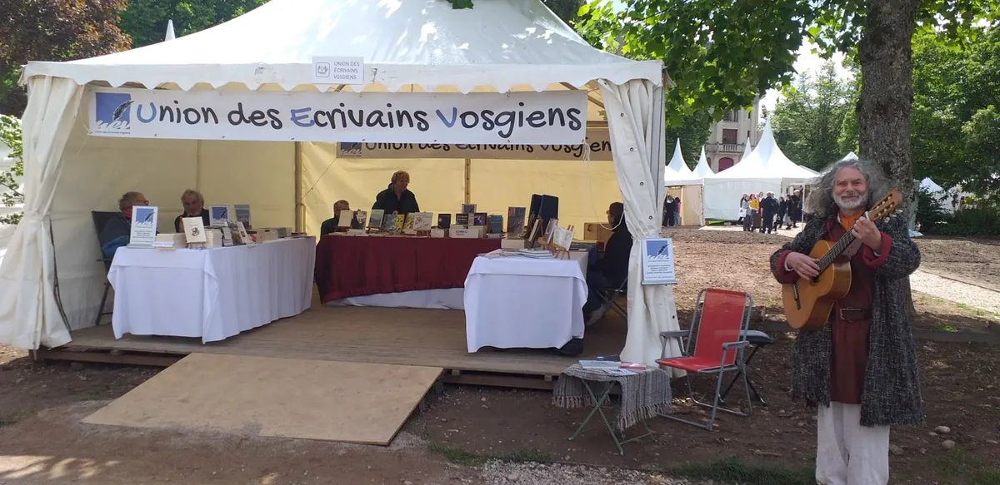

AccueilL'UEV
L'association
Une plume, mille histoires vosgiennes
L'UEV fait connaître les écrivains des Vosges et leurs ouvrages, et fait vivre la littérature sur le territoire.
Qui sommes-nous
Tous écrivains, publiés ou non
L'Union des Écrivains Vosgiens est une association d'auteurs installée à Épinal. Elle promeut la littérature et les auteurs des Vosges : poèmes, contes, essais, romans, récits.
« Nous ne faisons pas de distinguo entre auteurs publiés et écrivants en attente de l'être : tous écrivains ! » — Vincent Decombis, président.
Au fil des saisons, ses membres animent des ateliers d'écriture dans les médiathèques, tiennent un stand aux Imaginales d'Épinal, participent au Village des auteurs régionaux du Thillot et aux rencontres littéraires de la fête du Ballon d'Alsace, et ont constitué la Vosgiothèque, une bibliothèque de la création vosgienne.
Texte rédigé à partir du blog officiel et des annuaires publics. Le bureau peut le remplacer dans presentation.html.

Histoire
Repères dans le temps
Les sources publiques permettent de dater plusieurs jalons. Le bureau pourra les corriger et les compléter.
Les origines exactes (1968 ou 2006) sont à confirmer : l'annuaire du Centre culturel d'Épinal et le CTHS parlent d'une fondation en 1968, tandis que le répertoire des entreprises indique une immatriculation le 24 mars 2006.
- 1968
Fondation du groupement vosgien de l'Union des écrivains de l'Est, éditeur des Cahiers vosgiens (source : CTHS). À confirmer.
- 1998
Début du volet culturel de la fête artisanale du Ballon d'Alsace, présenté avec RECRE « Vivre et Créer à la Montagne ».
- 2006
Immatriculation de l'association à Épinal (24 mars 2006).
- 2019
Début des relations suivies avec l'Auberge littéraire belge de Waterloo.
- 2020
Création du Village des auteurs régionaux au Thillot, à l'initiative de Michel Villaume.
- 2025
Inauguration de la Vosgiothèque au tiers-lieu « Ailleurs » à Épinal : plus de quarante auteurs y ont confié leurs ouvrages.
Missions & valeurs
Ce qui nous anime
Faire connaître
Donner de la visibilité aux auteurs vosgiens et à leurs ouvrages : salons, dédicaces, Vosgiothèque, ce site.
Faire écrire
Ateliers d'écriture, scènes ouvertes « Jeux de Plumes », lectures : l'écriture se pratique et se partage.
Accueillir
Pas de hiérarchie entre auteurs publiés et écrivants : toute personne qui écrit est la bienvenue.
Ancrer dans le territoire
Montagne, forêts, théâtres de verdure, médiathèques : la littérature va à la rencontre des Vosgiens.
Le bureau
Qui fait vivre l'UEV
Seuls les noms publiés par l'association apparaissent. Les autres fonctions sont à renseigner.
Vincent Decombis
Président
Nicolas Cassagnau
Contact du projet de site — fonction à préciser
Vice-présidence
À renseigner
Secrétariat
À renseigner
Trésorerie
À renseigner
Statuts & adhésion
Rejoindre et connaître nos règles
Association loi 1901, siège à Épinal, enregistrée sous le SIREN 492 610 944.
Texte d'attente Les statuts (objet, composition, fonctionnement) et le montant de la cotisation seront publiés ici par le bureau. Document à ajouter : statuts-uev.pdf.
Adhérer en trois étapes
- Remplir le formulaire d'adhésion.
- Échanger avec le bureau.
- Recevoir votre fiche auteur et rejoindre les ateliers.